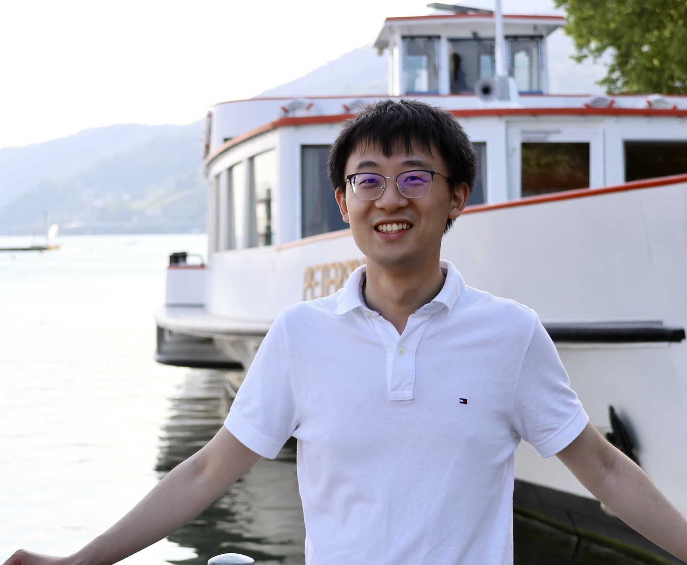

Welcome to the webpage of Dr. Junming Duan (段俊明). He is currently a Humboldt Research Fellow at the Institute of Mathematics, University of Würzburg, working with Prof. Dr. Christian Klingenberg. Until September 2023, he was a postdoctoral researcher at MCSS, EPFL, working with Prof. Jan S. Hesthaven. He received his B.Sc. (2016) and Ph.D. (2021) at Peking University, in the School of Mathematical Sciences, supervised by Prof. Huazhong Tang. His research primarily involves high-order accurate numerical methods and reduced-order modeling.
Mailing address:Room 03.017, Emil-Fischer-Straße 40, 97074 Würzburg, Germany
Julius-Maximilians-Universität Würzburg
Email: junming.duan@uni-wuerzburg.de